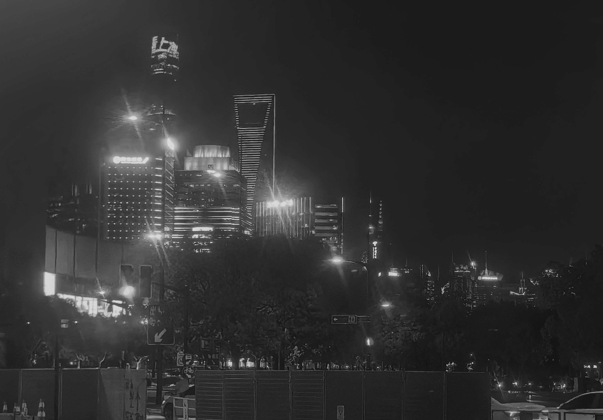
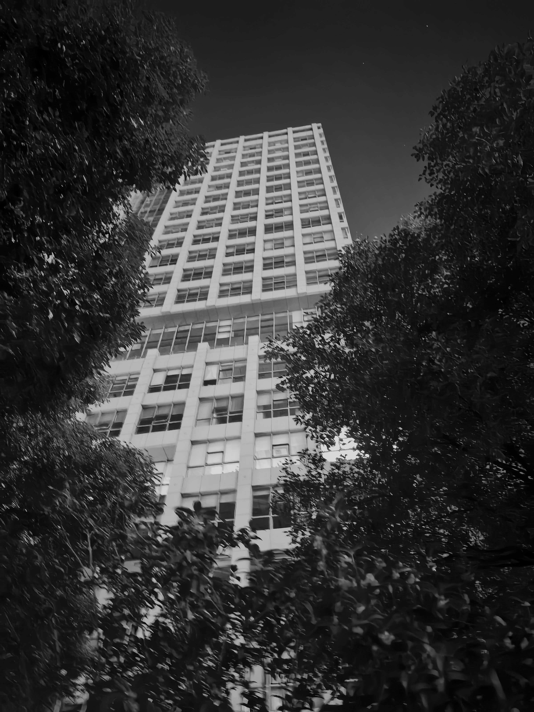
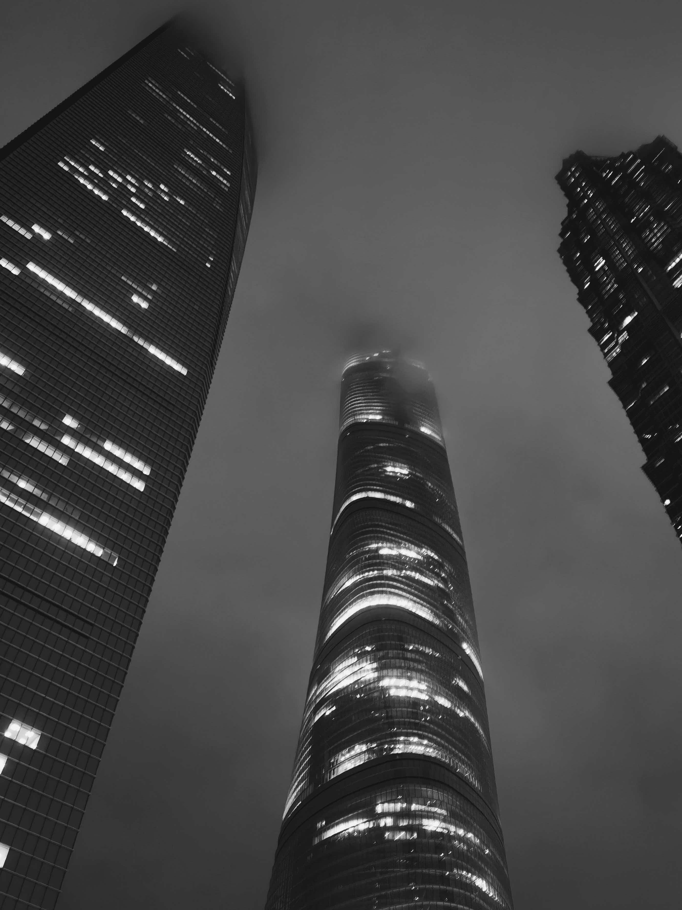
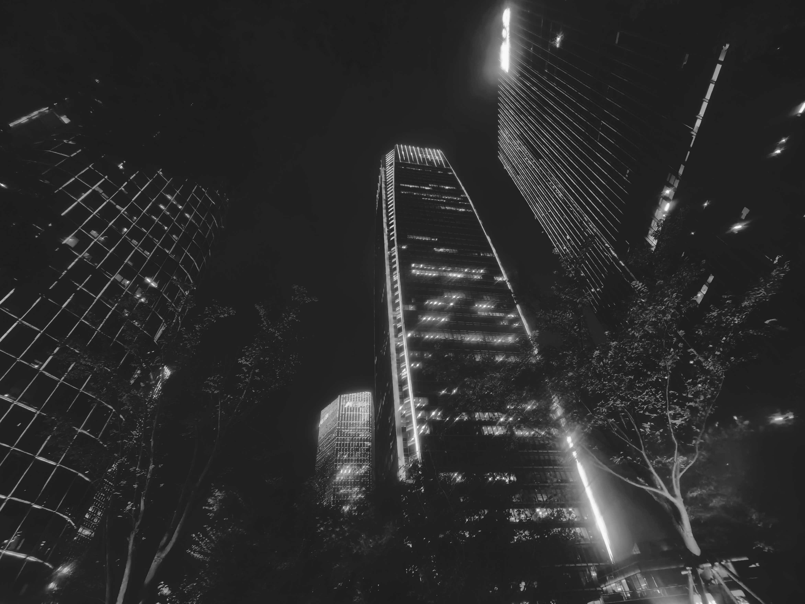
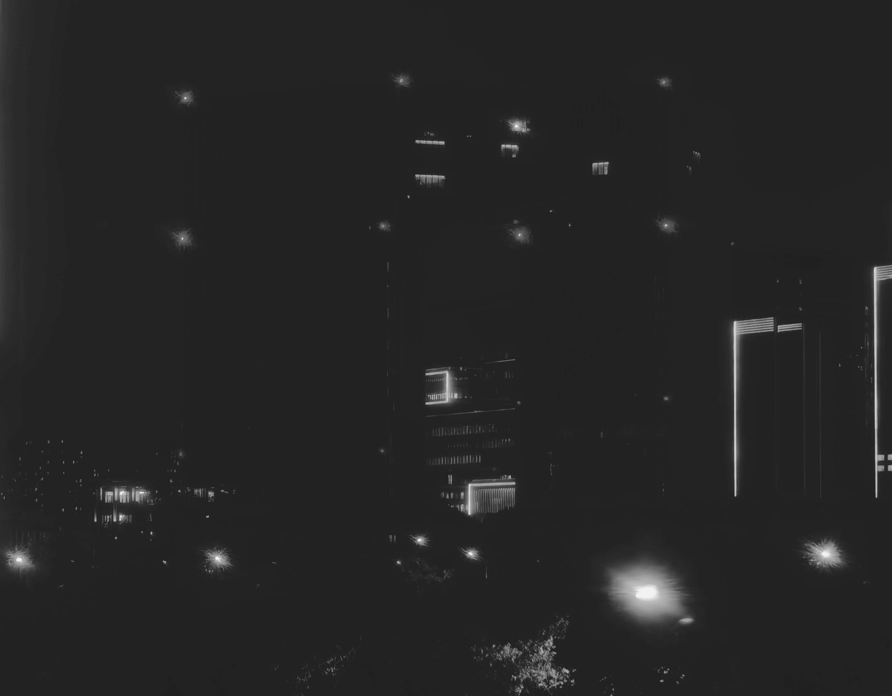
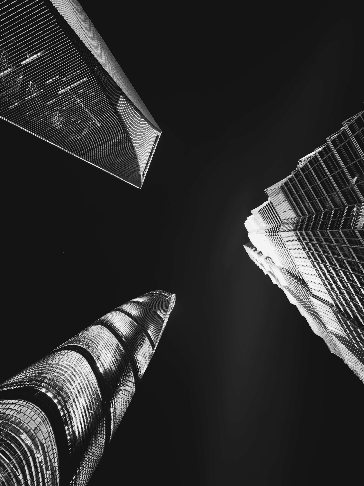
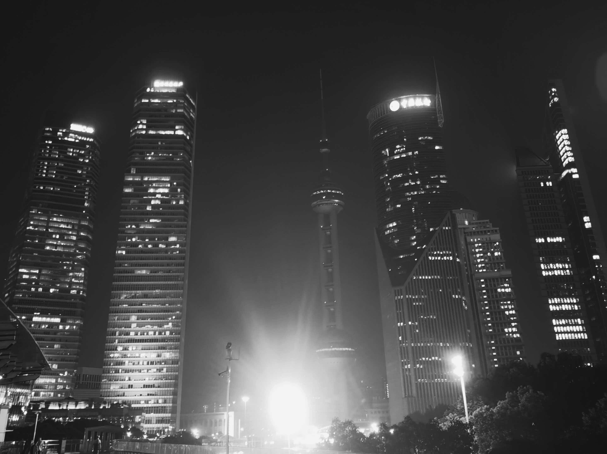
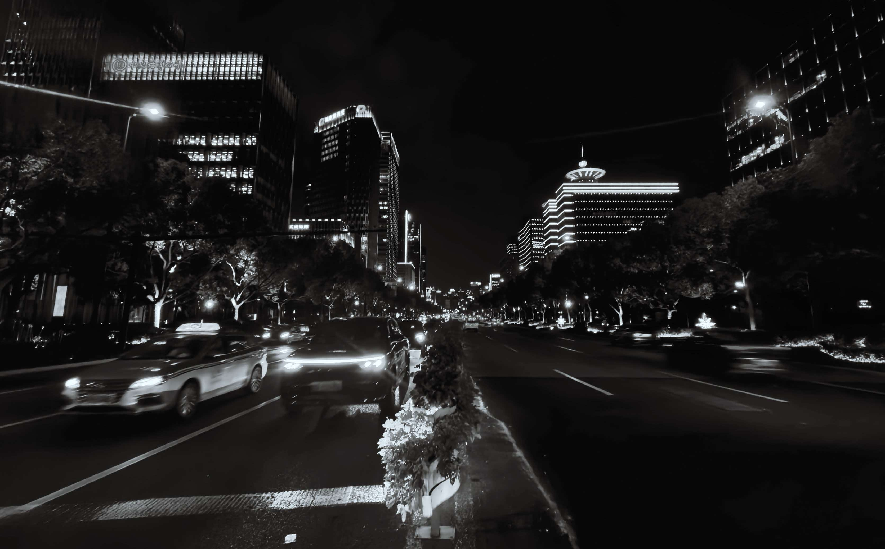
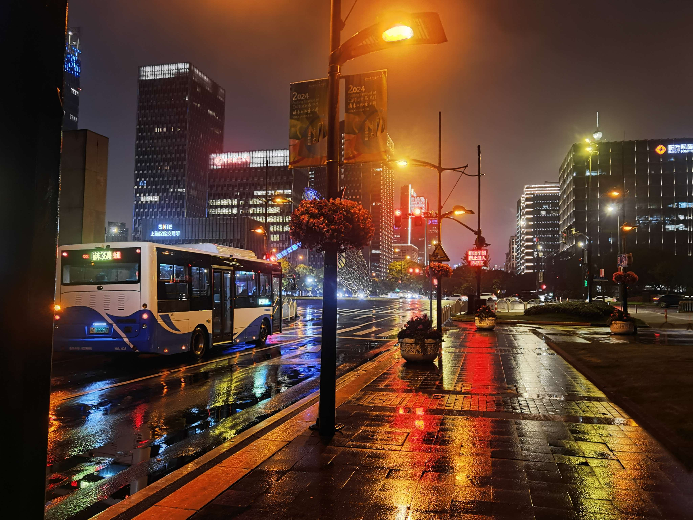

Welcome to photo essay Wanderer in the great Modern. This photo essay is for anyone who live in Shanghai, especially who live nearby or in the city center, where is typically called ‘steel made rainforest’.
This essay is aimed to reflect on high buildings, city and modernity. As the city grows ‘larger’, the buildings grow higher, what meaning do they carry? And how do we live inside them? This is the question I want to answer.
This essay uses mainly the theory of alienation by Marx, the concept of uncanny from Freud, and the theory of ‘Non-places’ from Marc Augé as critical lens.
One thing to say before you read is that, I deliberately use the tone of parallel-narrating. I try to let the text and the picture speak together. Some parts of the text might explain the picture, but most of them will be narrating without describing the picture. I hope I can combine the feeling you get when looking at the photo with the text, instead of spending space on just explaining.
Enjoy!

Look up, and you see the buildings.
“People live in cities”. This is a rather political statement. From a more pragmatic, down-to-earth perspective, it is far more accurate to say that “people live in buildings.” Viewed this way, architecture serves as the carrier of that imagined entity we call the “city.”
What did the very first human-built structure look like? We may never know for certain. However, we can be fairly confident that its height wasn't much taller than our ancestors themselves. Now, take a look at the buildings around us today, and you’ll find their heights could easily accommodate a hundred people stacked one on top of another. We find ourselves in an awkward situation where human creations seem to have grown too large, while the human body remains unchanged. As a result, human beings are rendered insignificant.
I’m someone who likes walking in the city, and when I pass by these buildings at night……

I can’t remember when the word ‘megaconstruction’ struck me when I looked up at the buildings. In fictions, megaconstructions are the artificial constructions that are ridiculously large, like a dam over the whole coastline, a spire that goes all the way up to the stratosphere, or even an iron shell that covers a star. But actually, a building doesn’t need to be that big to seem unreal. If you see a Monolith that stabs into the cloud, can you really determine how big it is?
However, if we pause to ponder the deeper implications of the word ‘megaconstruction’, something feels subtly unsettling. The 'massiveness' of a megaconstruction lies in the fact that its scale is unreasonable, unnecessary, and even wasteful. In other words, rather than serving a practical function, it exists primarily as a visual spectacle.
What happens, then, when such a visual spectacle manifests in reality? It signifies that architecture no longer serves human beings. It is not colossal out of necessity. It is colossal to overlook, and emphasize our own insignificance.

Although developers and corporations love excuses for turning their office towers into "modern wonders," they can never quite hide the fact that these buildings have undergone a profound alienation. Their primary client has shifted from human beings to capital. Their capacity to provide a genuine space for living has degraded, degenerating instead into controlling, working hand-in-hand with punch-in systems to ensure workers remain at their desks and to restrict their movement.
From another angle, the inhabitants within these towers are themselves alienated, reduced to mere screws keeping the modern economic machine turning, or as Chinese white-collar workers widely mock themselves, "cattle-horses" (牛马). It is, in a way, pretty fit: Aren't cages where cattle are supposed to be?
Wandering beneath these monolithic towers and looking up, I feel a cold, unyielding sense of power. Through these megaconstructions, the capital broadcasts its declaration: "Yes, I didn't need to build it this high... but I just can."

Shanghai’s night is always drowned in light pollution, keeping the empty buildings gleaming as brightly as the day. Yet, I sometimes find myself walking past high-rises where almost all the lights have been extinguished. Their details are swallowed by the dark, leaving only blurred, flickering silhouettes against the night sky. In these moments, an inexplicable discomfort suddenly creeps over me, which is, what Sigmund Freud described as the uncanny.
We are all too familiar with office towers by day. These giant structures are usually tied to a set of vivid impressions: bright illumination, busy white-collar workers, and glass facades shimmering in the sunlight. These images form our stereotype of "modernity." But when humans are away from the scene and that glossy impression evaporates, we seem to realize for the first time that these megaconstructions do not require human presence at all. Rather, it is humans who must exhaust themselves just to fill their interiors. From this perspective, it is not so much that they have become strange or unfamiliar in the dark, but that their true nature has finally been exhibited wildly.
An alienated modernity hardly cares whether humans exist within it or not.

Then again, I have to say that it is human nature to fascinate pure massiveness and sense of order. Whatever meanings they take, they are the showcase of human power and collective efforts. And you have to acknowledge that, they are extremely breathtaking, once you find the right angle.
There are communities surrounding the unique ‘megaconstruction aesthetics’. They have many reasons for appreciating such arts. For example, giant constructions symbolize the conquest of human rationality, engineering and wisdom over nature; They also give people senses of safe loneliness as well as freedom and escape from reality by showing how small human beings are. Additionally, there can be pure awe to power and the extraordinary. When I pass by the real-world megaconstructions, I do feel my heart caught by them because of these reasons.

However, it is precisely here that art and reality diverge. Art can delve into pure beauty without restraint, whereas human beings in reality must inevitably confront some nasty business of survival...
Wandering through the same quarter of Lujiazui with an empty stomach, I found not a single noodle shop, casual diner, Shaxian Delicacies, or even a basic convenience store to grab a bite. There were only the polished, radiant signboards of fine dining with average bills well over 1,000 RMB. These are spaces designed for bosses to clink glasses and negotiate deals. It is said that in the Amazon rainforest, edible food is actually surprisingly scarce; at that moment, I felt as though I were trapped in a similar jungle, one out of steel and concrete monoliths.
Marc Augé once coined the concept of "Non-Places". They are spaces in modern cities no longer designed for human habitation or emotional connection, but strictly engineered for the circulation of capital. They lack emotional depth and private memories; or in traditional Chinese terms, they lack "liveliness and warmth" (烟火气). If we observe closely, we will find that the denser the megaconstructions are, the more a space resembles a "non-place", which is a distinct manifestation of modern alienation.

What is a city? What is modernity? These questions may not have simple answers. However, our discussion above might unravel a disturbing dimension of truth, that is citiness can be composed of pure spectacle, without humans inside. Or, humans are inside, but no one cares about them, even themselves. Along two sides of the avenue, countless high-rises stand, and streams of cars flow in the middle. In this order there are humans, however, not a single person can be seen. We are of many, but we are all alone.
We are wanderers, in the great modern.

Now, are we in despair?...Of course not.
Even in the deepest corners of this steel jungle, you can still find people out for a leisurely walk (like myself), elderly folks gathering for square dancing (Although they are also insufferable), and all kinds of individuals simply going about their daily lives. My response to a city occupied by megaconstructions is actually quite simple: a megaconstruction is ultimately just infrastructure, just another piece of the urban landscape. If you stand outside of it, you can freely appreciate its spectacle; if you find yourself trapped within it, I believe there are still quiet nooks where you can carve out a world of your own.
Besides, this monolith is hardly an airtight fortress. A public bus that costs just 2 RMB can roll onto the start of Century Avenue with the exact same right of way as a multi-million-dollar supercar.
We can admit that modernity has been alienated, and that we too face the risk of being alienated by it. Yet precisely because of this, we cannot afford to become numb, nor should we let ourselves be consumed by bitterness.
So, get downstairs more often. Look up at the sky. Take a few photos—or don't. That’s also fine.